This Snowflake Quickstart introduces you to the using Snowflake together with Dataiku Cloud as part of a Machine learning project, and build an end-to-end machine learning solution. This lab will showcase seamless integration of both Snowflake and Dataiku at every stage of ML life cycle. We will also use Snowflake Marketplace to enrich the dataset.
Business Problem
Will go through a supervised machine learning by building a binary classification model to predict if a lender will default on a loan. LOAN_STATUS (yes/no) considering multiple features.
Supervised machine learning is the process of taking a historical dataset with KNOWN outcomes of what we would like to predict, to train a model, that can be used to make future predictions. After building a model we will deploy back to Snowflake for scoring by using Snowpark-java udf.
Dataset
We will be exploring a financial service use of evaluating loan information to predict if a lender will default on a loan. The base data set was derived from loan data from the Lending Club.
In addition to base data, this will then be enriched with unemployment data from Knoema on the Snowflake Marketplace.
What We're Going To Build
We will build a project. The project contains the input datasets from Snowflake. We'll build a data science pipeline by applying data transformations, enriching from Marketplace employment data, building a machine learning model, and deploying it to the Flow. We will then see how you can score the model against fresh data from Snowflake and automate
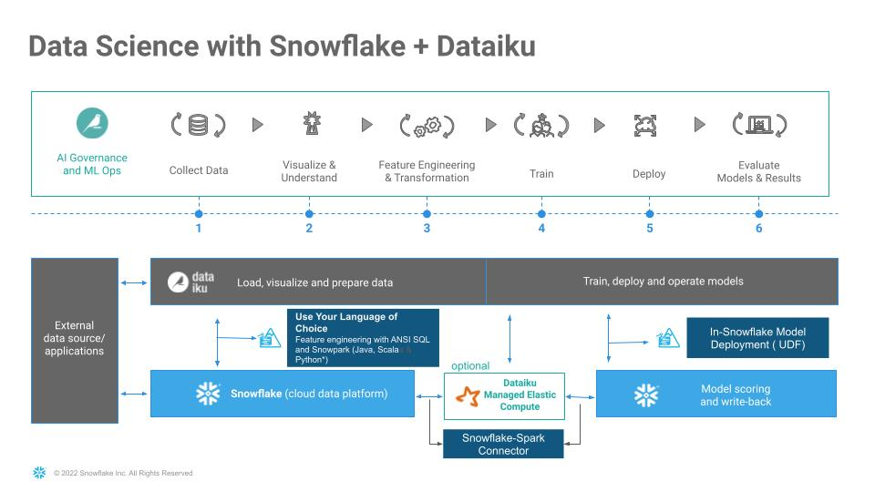
Prerequisites
- Familiarity with Snowflake, basic SQL knowledge and Snowflake objects
- Basic knowledge Machine Learning
- Basic knowledge Python, Jupyter notebook for
Bonus
What You'll Need During the Lab
To participate in the virtual hands-on lab, attendees need the following:
- A Snowflake free 30-day trial
ACCOUNTADMINaccess - Dataiku Cloud trial version via Snowflake's Partner Connect
What You'll Build
Operational end-to-end ML project using joint capabilities of Snowflake and Dataiku from Data collection to deployment
- Create a Data Science project in Dataiku and perform analysis on data via Dataiku within Snowflake
- The analysis and feature engineering using Dataiku
- Create, run, and evaluate simple Machine Learning models in Dataiku, measure their performance and interpret
- Building and deploying Pipelines
- Use Snowpark-Java UDF to score result on test dataset and write back to Snowflake
- Use cloning to create separate pipeline for testing
- Bonus track using Snowpark - python
- If you haven't already, register for a Snowflake free 30-day trial
- Note: Please ensure that you use the
same email addressfor both your Snowflake and Dataiku sign up - Region - Kindly choose
US West (Oregon)for this lab - Cloud Provider - Kindly choose
AWSfor this lab - Snowflake edition - Select the
Enterprise editionso you can leverage some advanced capabilities that are not available in the Standard Edition.


After registering, you will receive an emailwith an activation link and your Snowflake account URL. Kindly activate the account.

After activation, you will create a user nameand password. Write down these credentials. Bookmark this URL for easy, future access.
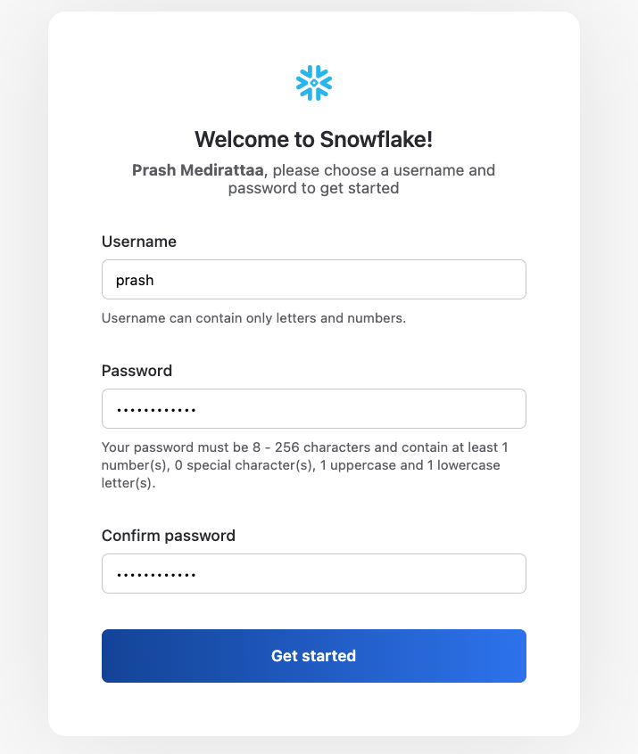
Step 1
Log in with your credentials. Bookmark this URL for easy, future access.
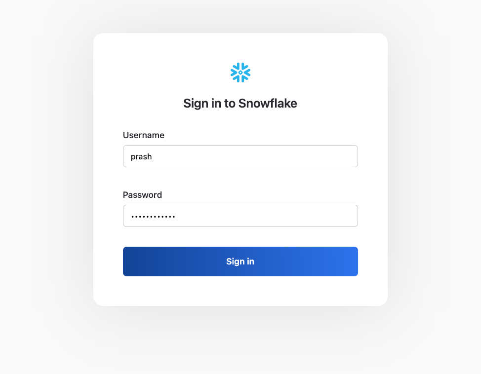
Resize your browser window, so that you can view this guide and your web browser side-by-side and follow the lab instructions. If possible, use a secondary display dedicated to the lab guide.
Step 2
Log into your Snowflake account. By default it will open up home page.
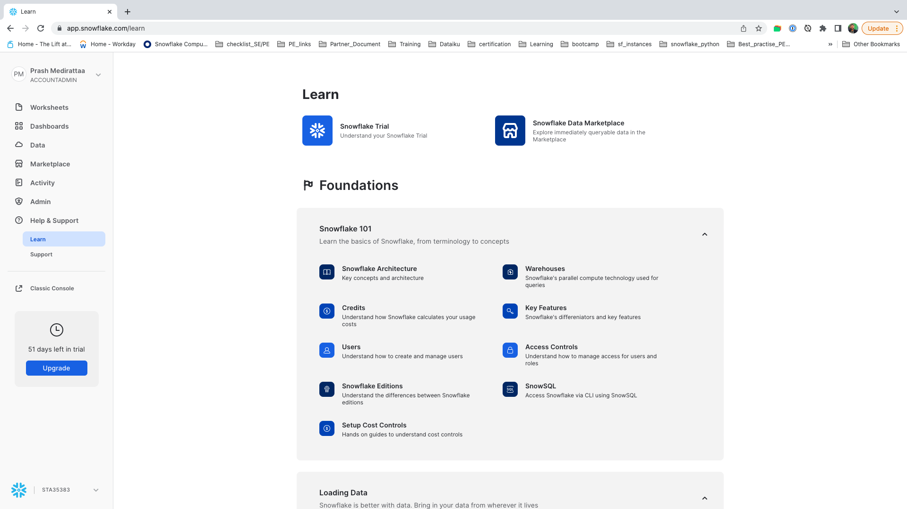
Step 3
To create Worksheet . Click on the Worksheets tab. A new screen will open up.
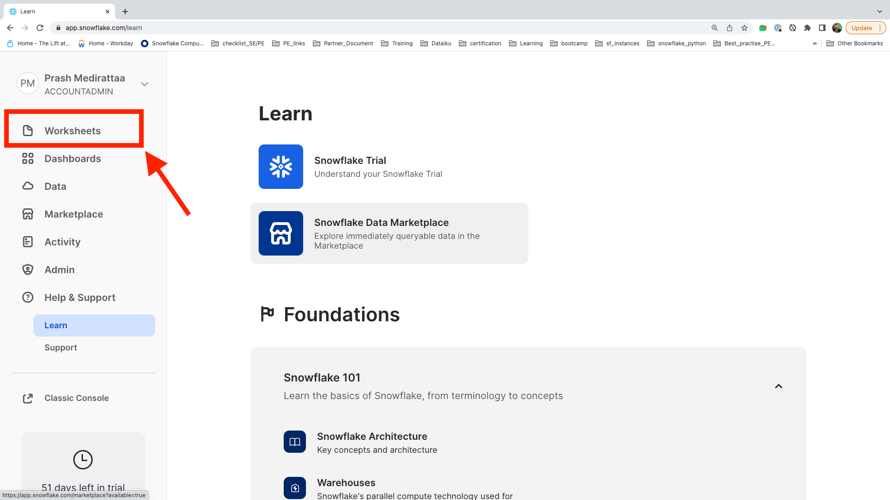
Step 4
Click on + Worksheet to create your first worksheet.

Step 5
New Worksheet will be created with a Time stamp. Let's now rename this Worksheet by clicking on the Time stamp.

You can name anything, but for this lab we will Rename it as Data Loading.

Download the following .sql file that contains a series of SQL commands we will execute throughout this lab. You can either execute cell by cell commands from the sql file or copy the below code blocks and follow.
Part 1 : Step 1 - Step 4
Creating database, Warehouse, loading dataset
Part 2 : Step 5 - Step 8
Tapping Snowflake Marketplace dataset
After creating the worksheet in the last step we can import the sql file provided .
Click on drop down button.

Select Import SQL from File option to import the SQL file just downloaded. Select it and Enter.

Data Loading : Steps
Each step throughout the guide has an associated SQL command to perform the work we are looking to execute, and so feel free to step through each action running the code line by line as we walk through the lab.
If you wish to run the code at once
Part 1 : Step 1 - Step 4 need to run first and then additional steps are then required before executing
Part 2 : Step 5 - Step 8.
To execute this code, all we need to do is place our cursor on the line we wish to run and then either hit the "run" button at the top left of the worksheet or press Cmd/Ctrl + Enter
Step 1 : Virtual warehouse that we will use to compute with the SYSADMIN role.
USE ROLE SYSADMIN;
CREATE OR REPLACE WAREHOUSE ML_WH
WITH WAREHOUSE_SIZE = 'XSMALL'
AUTO_SUSPEND = 120
AUTO_RESUME = true
INITIALLY_SUSPENDED = TRUE;
Step 2 : In this step we will first create ML_DB and then create a Loan_data table in that database.
USE WAREHOUSE ML_WH;
CREATE DATABASE IF NOT EXISTS ML_DB;
USE DATABASE ML_DB;
CREATE OR REPLACE TABLE loan_data (
LOAN_ID NUMBER(38,0),
LOAN_AMNT FLOAT,
FUNDED_AMNT FLOAT,
TERM VARCHAR(4194304),
INT_RATE VARCHAR(4194304),
INSTALLMENT FLOAT,
GRADE VARCHAR(4194304),
SUB_GRADE VARCHAR(4194304),
EMP_TITLE VARCHAR(4194304),
EMP_LENGTH_YEARS NUMBER(38,0),
HOME_OWNERSHIP VARCHAR(4194304),
ANNUAL_INC FLOAT,
VERIFICATION_STATUS VARCHAR(4194304),
ISSUE_DATE_PARSED TIMESTAMP_TZ(9),
LOAN_STATUS VARCHAR(4194304),
PYMNT_PLAN BOOLEAN,
PURPOSE VARCHAR(4194304),
TITLE VARCHAR(4194304),
ZIP_CODE VARCHAR(4194304),
ADDR_STATE VARCHAR(4194304),
DTI FLOAT,
DELINQ_2YRS FLOAT,
EARLIEST_CR_LINE VARCHAR(4194304),
INQ_LAST_6MTHS FLOAT,
MTHS_SINCE_LAST_DELINQ FLOAT,
MTHS_SINCE_LAST_RECORD FLOAT,
OPEN_ACC FLOAT,
REVOL_BAL FLOAT,
REVOL_UTIL FLOAT,
TOTAL_ACC FLOAT,
TOTAL_PYMNT FLOAT,
MTHS_SINCE_LAST_MAJOR_DEROG FLOAT,
TOT_CUR_BAL FLOAT,
ISSUE_MONTH NUMBER(38,0),
ISSUE_YEAR NUMBER(38,0)
);
After running the cell above, we have successfully created a loan_data table.

Step 3 : In this step we will create an external stage LOAN_DATA to load the lab data. This is done from a public S3 bucket to simplified for this workshop.
Typically an external stage will be using various secure integrations as described in this link.
CREATE OR REPLACE STAGE LOAN_DATA
url='s3://snowflake-corp-se-workshop/Summit_Snowflake_Dataiku/data/';
---- List the files in the stage
list @LOAN_DATA;
Listing the files from S3 bucket

Step 4 : In this step we will copy the loan_data csv file to the loan_data table we created.
COPY INTO loan_data FROM @LOAN_DATA/loans_data.csv
FILE_FORMAT = (TYPE = 'CSV' field_optionally_enclosed_by='"',SKIP_HEADER = 1);
SELECT * FROM loan_data LIMIT 100;
Below is the snapshot of the data and it represents aggregation from various internal systems for lender information and loans. We can have a quick look and see the various attributes in it.
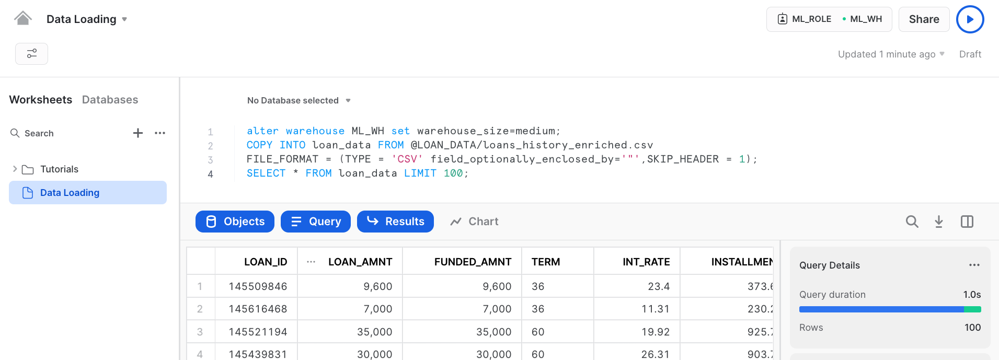
We have successfully loaded the data from external stage to snowflake.
Step 5 : Time to switch to get Konema Employement Data from Snowflake Market place
We can now look at additional data in the Snowflake Marketplace that can be helpful for improving ML models. It may be good to look at employment data in the region when analyzing loan defaults. Let's look in the Snowflake Marketplace and see what external data is available from the data providers.
Lets go to home screen by clicking on home icon.

Imp Note
Click Market place tab- Make Sure
ACCOUNTADMINrole is selected - In search bar type
Labor Data Atlas

Click on the tile with Labor Data Atlas

Next click on the Get Data button. This will provide a pop up window in which you can create a database in your account that will provide the data from the data provider.
Important : Steps
- Change the name of the database to
KNOEMA_LABOR_DATA_ATLAS - Select additional roles drop down
PUBLIC - Click
Get Data

When the confirmation is provided click on done and then you can close the browser tab with the Preview App.
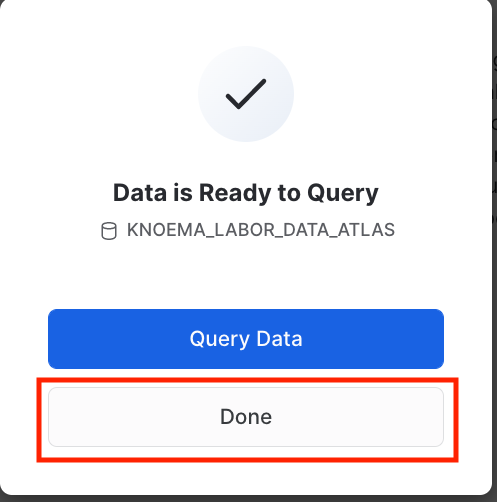
Other advantage of using Snowflake Marketplace does not require any additional work and will show up as a database in your account. A further benefit is that the data will automatically update as soon as the data provider does any updates to the data on their account.
- After done just to
confirmthe datasets are properly configured - Click on Data tab
Database - You should see
KNOEMA_LABOR_DATA_ATLASandML_DB

After confirming Databases. Lets go to Worksheets tab and then open the Data Loadingworksheet
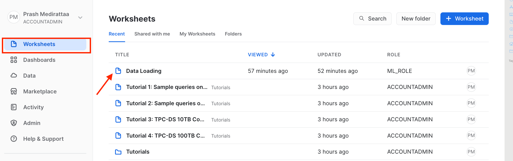
Step 6 : Querying the KNOEMA_LABOR_DATA_ATLASfor some basic analysis
There are multiple datasets. Lets try to find unemployment dataset in US to narrow down our search.
USE WAREHOUSE ML_WH;
USE DATABASE KNOEMA_LABOR_DATA_ATLAS;
SELECT *
FROM "LABOR"."DATASETS"
WHERE "DatasetName" ILIKE '%unemployment%'
AND "DatasetName" ILIKE '%U.S%';
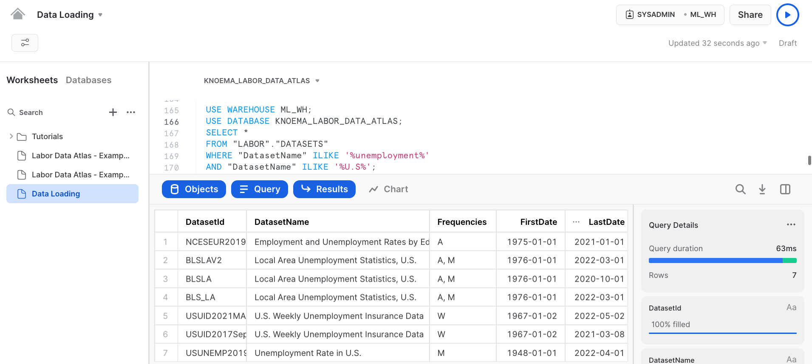
Amazing! We have successfully tapped into live data collection of the most important, used, and high-quality datasets on the labor market and human resources on national and sub-national levels from a dozen of sources.
We can find answers such as what is the number of initial claims for unemployment insurance in the US over time?
SELECT * FROM "LABOR"."USUID2017Sep" WHERE "Region Name" = 'United States' AND
"Indicator Name" = 'Initial Claims' AND "Measure Name" = 'Value' AND
"Seasonal Adjustment Name" = 'Seasonally Adjusted' ORDER BY "Date";

Now for this exercise we are going to Enrich the Loan dataset we created earlier using the BLSLA dataset
Step 7 : Creating a KNOEMA_EMPLOYMENT_DATA marketplace data view. We will pivot the data for the different employment metrics so it can be used easily for analysis.
USE DATABASE ML_DB;
CREATE OR REPLACE VIEW KNOEMA_EMPLOYMENT_DATA AS (
SELECT *
FROM (SELECT "Measure Name" MeasureName, "Date",
"RegionId" State,
AVG("Value") Value
FROM "KNOEMA_LABOR_DATA_ATLAS"."LABOR"."BLSLA" WHERE "RegionId" is not null
and "Date" >= '2018-01-01' AND "Date" < '2018-12-31' GROUP BY "RegionId", "Measure Name", "Date")
PIVOT(AVG(Value) FOR MeasureName
IN ('civilian noninstitutional population', 'employment', 'employment-population ratio',
'labor force', 'labor force participation rate', 'unemployment', 'unemployment rate')) AS
p (Date, State, civilian_noninstitutional_population, employment, employment_population_ratio,
labor_force, labor_force_participation_rate, unemployment, unemployment_rate)
);
SELECT * FROM KNOEMA_EMPLOYMENT_DATA LIMIT 100;
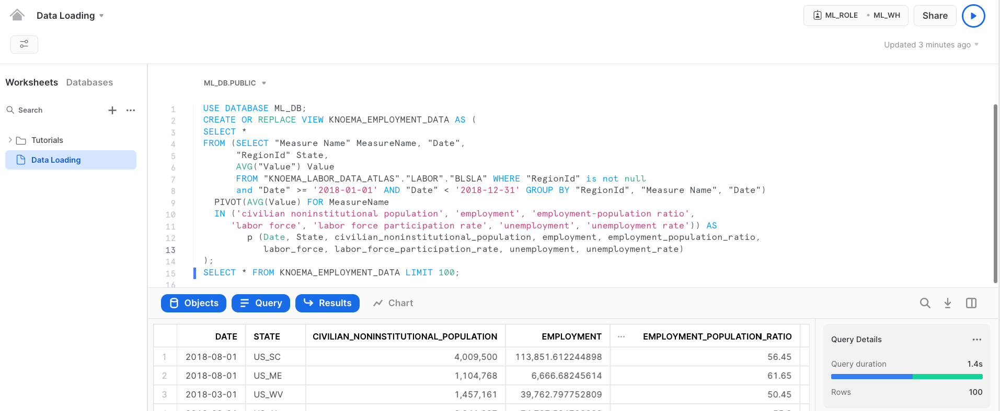
We have successfully created the view.
Step 8 : Now in this step we will Create a new table called UNEMPLOYMENT DATA using the geography and time periods by joining LOAN_DATA table created from S3 and KNOEMA_EMPLOYMENT_DATA VIEW created in last step.
This will provide us with unemployment data in the region associated with the specific loan.
CREATE OR REPLACE TABLE UNEMPLOYMENT_DATA AS
SELECT l.LOAN_ID, e.CIVILIAN_NONINSTITUTIONAL_POPULATION,
e.EMPLOYMENT, e.EMPLOYMENT_POPULATION_RATIO, e.LABOR_FORCE,
e.LABOR_FORCE_PARTICIPATION_RATE, e.UNEMPLOYMENT, e.UNEMPLOYMENT_RATE
FROM LOAN_DATA l LEFT JOIN KNOEMA_EMPLOYMENT_DATA e
on l.ADDR_STATE = right(e.state,2) and l.issue_month = month(e.date) and l.issue_year = year(e.date);
SELECT * FROM UNEMPLOYMENT_DATA LIMIT 100;
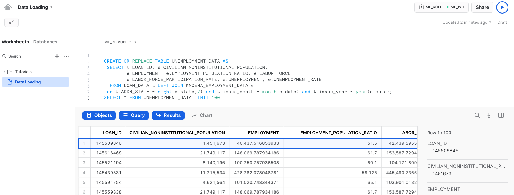
Go to home screen clicking on home button.

Select the Admin from the list.

For the next steps
ClickthePartner Connect- From
drop downswitch role and make sureACCOUNTADMINis selected - Search title type
Dataiku - Click on the
Dataikutile.
Your screen should like below Screen Shot

After you have clicked on Dataiku. This will launch the following window, which will automatically create the connection parameters required for Dataiku to connect to Snowflake.
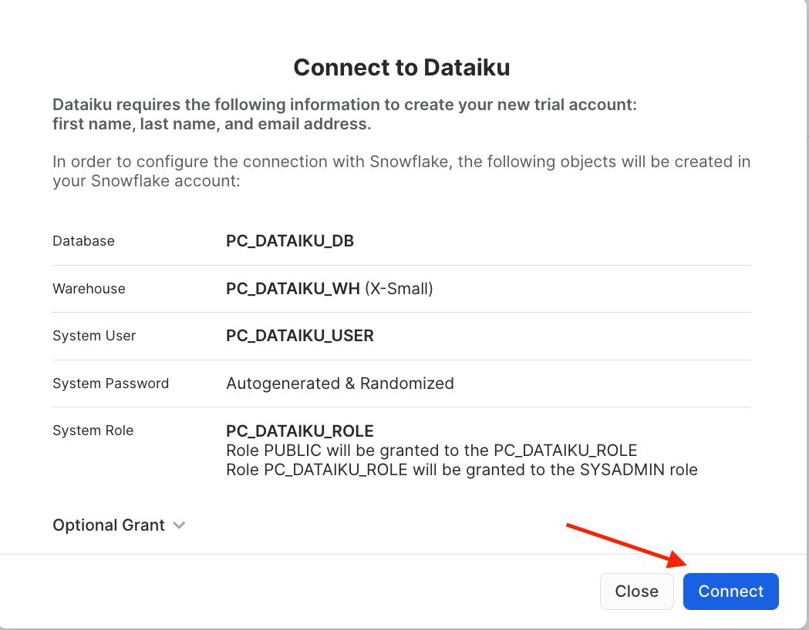
Snowflake will create a dedicated database, warehouse, system user, system password and system role, with the intention of those being used by the Dataiku account.
We'd like to use the PC_DATAIKU_USER to connect from Dataiku to Snowflake, and use the PC_DATAIKU_WHwhen performing activities within Dataiku that are pushed down into Snowflake.
Note that the user password (which is autogenerated by Snowflake and never displayed), along with all of the other Snowflake connection parameters, are passed to the Dataiku server so that they will automatically be used for the Dataiku connection. DO NOT CHANGE THE PC_DATAIKU_USER password, otherwise Dataiku will not be able to connect to the Snowflake database.
Click on Connect. You may be asked to provide your first and last name. If so, add them and click Connect. Your partner account has been created. Click on Activate to get it activated.

This will launch a new page that will redirect you to a launch page from Dataiku.
For the lab ae assume that you're new to Dataiku, so ensure the "Sign Up" box is selected, and sign up using the email address (Note: This should be the same email address that you used to set up your Snowflake account) and a new password of your choosing.

When using your email address, ensure your password fits the following criteria:
- At least 8 characters in length
- Should contain:Lower case letters (a-z)Upper case letters (A-Z)Numbers (i.e. 0-9)
Upon clicking on the activation link, please briefly review the Terms of Service of Dataiku Cloud. In order to do so, please scroll down to the bottom of the page. Click on I AGREE

Next, you'll need to complete your sign up information then click on Start.
You will be redirected to the Dataiku Cloud Launchpad site. Click GOT IT! to continue.


You've now successfully set up your Dataiku trial account via Snowflake's Partner Connect. We are now ready to continue with the lab. For this, move back to your Snowflake browser.
After connecting Snowflake to Dataiku via partner connect. We will clone the table created in ML_DB to PC_DATAIKU_DB for the Dataiku consumption.
Snowflake provides a very unique feature called Zero Copy Cloning that will create a new copy of the data by only making a copy of the metadata of the objects. This drastically speeds up creation of copies and also drastically reduces the storage space needed for data copies.
You should see three database now PC_DATAIKU_DB is the system generated database created.

You should see PC_DATAIKU_USER is the system generated database created.

Go back to Data_Loading Worksheet you are working and run below commands.
Granting Privileges of ML_DB to PC_Dataiku_role
grant all privileges on database ML_DB to role PC_Dataiku_role;
grant usage on all schemas in database ML_DB to role PC_Dataiku_role;
grant select on all tables in schema ML_DB.public to role PC_Dataiku_role;
grant select on all views in schema ML_DB.public to role PC_Dataiku_role;
There are two options after this. You can either create a New Worksheet or continue in same worksheet . We will continue with same Worksheet. We just have to refresh your browser after the next step
USE ROLE PC_DATAIKU_ROLE;
Imp: Refresh the web page
After running above command you might see the prompt below. Kindly refresh the browser.
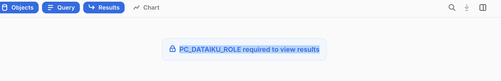
Cloning tables to DATAIKU Database before consuming it for Dataiku DSS
USE DATABASE PC_DATAIKU_DB;
USE WAREHOUSE PC_DATAIKU_WH;
--- cloning
CREATE OR REPLACE TABLE LOANS_ENRICHED CLONE ML_DB.PUBLIC.LOAN_DATA;
CREATE OR REPLACE TABLE UNEMPLOYMENT_DATA CLONE ML_DB.PUBLIC.UNEMPLOYMENT_DATA;
SELECT * FROM LOANS_ENRICHED LIMIT 10;
After running above commands, we have created clones for the tables to be used for analysis. Kindly check PC_DATAIKU_DB
you should have two datasets LOANS_ENRICHED and UNEMPLOYMENT_DATA

Return to Dataiku Online and if you haven't already click on OPEN DATAIKU DSS from the Launchpad to start your instance of Dataiku DSS
Here is the project we are going to build along with some annotations to help you understand some key concepts in Dataiku DSS:

- A dataset is represented by a blue square with a symbol that depicts the dataset type or connection. The initial datasets (also known as input datasets) are found on the left of the Flow. In this project, the input datasets will be the ones we created in the first part of the lab.
- A recipe in Dataiku DSS (represented by a circle icon with a symbol that depicts its function) can be either visual or code-based, and it contains the processing logic for transforming datasets.
- Machine learning processes are represented by green icons.
- The Actions Menu is shown on the right pane and is context sensitive.
- Whatever screen you are currently in you can always return to the main Flow by clicking the Flow symbol from the top menu (also clicking the project name will take you back to the main Project page).
Input dataset:The dataset is based on the Loans Dataset from LendingClub which is a peer-to-peer lending company that matches borrowers and investors.
In the interests of time we have performed some initial steps of the data pipeline such as cleansing and transformations on the loans dataset. These steps can be created in Dataiku from the raw datasets from the Lending Club to form a complete pipeline with the data and execution happening in Snowflake.
Reminder of our goal
Our goal is to build an optimized machine learning model that can be used to predict the risk of default on loans for customers and advise them on how to reduce their risk. To do this, we'll join the input datasets, perform transformations & feature engineering so that they are ready to use for building a binary classification model.
Creating a Dataiku Project
Once you've logged in, click on + NEW PROJECT and select + Blank project to create a new project.
Name the project as Credit Scoring

The project home acts as the command center from which you can see the overall status of a project, view recent activity, and collaborate through comments, tags, and a project to-do list. Let's add our datasets from Snowflake.
- From the Flow click
+ Import Your First Datasetin the centre of the screen.

- Select the
Search and import option

- Select the
PC_DATAIKU_DBconnection from the dropdown thenclick the refresh iconnext to the database or schema dropdowns to populate these options. - Select the database and schema as below then click on
LIST TABLES

- Select the
Loans_EnrichedandUnemployment_Datadatasets and clickCREATE 2 DATASETSfollowed byOK


- Navigate to the Flow from the left-most menu in the top navigation bar
(or use the keyboard shortcut G+F).

In DSS, the datasets and the recipes together make up the flow. We have created a visual grammar for data science, so users can quickly understand a data pipeline through the flow.
Using the flow, DSS knows the lineage of every dataset in the flow. DSS, therefore, is able to dynamically rebuild datasets whenever one of their parent datasets or recipes has been modified. This is where we will work from in this lab.
Now we have all of the raw data needed for this lab. Let's explore what's inside these datasets.
- From the Flow (keyboard shortcut G+F), double click on the
LOANS_ENRICHEDdataset to open it.
One column to note is the LOAN_STATUS column. This will be our target variable to predict against later in the lab.
- You can analyze column metrics to better understand your data: Either click on the column name and
select Analyzeor, if you wish for a quick overview of columns key statistics,select Quick Column Statsbutton on the top-right.

Join the Data
So far, your Flow only contains datasets. To take action on datasets, you need to apply recipes. The LOANS_ENRICHED and UNEMPLOYMENT_DATA datasets both contain a column of Loan IDs. Let's join these two datasets together using a visual recipe.
- Return to the Flow either by clicking the menu option in the top left or with the keyboard shortcut G+F
- Select the
LOANS_ENRICHEDdataset from the Flow bysingle clickingon it. - Choose
Join With...from theVisual recipessection of the Actions sidebar near the top right of the screen (note: click theOpen Panelarrow if it is minimized and notice there are three different types of join recipe, we wantJoin With...). - Choose
UNEMPLOYMENT_DATAas the second input dataset. - Leave the defaults for
NameandPC_DATAIKU_DB for "Store into"andCreatethe recipe.

- Leave the defaults for the
JoinandSelected columnssteps.

- Select the
Output step - Note: You can view the SQL query as well as the execution plan generated by selecting
VIEW QUERY - Ensure that
In-database (SQL)is selected as the engine. You can view this underneath theRun button(Bottom left). If it is set to a different engineclick on the three cogsto change it - Before running,
Savethe recipe - Click the
RUNbutton - If prompted agree to
Update Schemathen return to theflow (G+F)

Your flow should now look like this
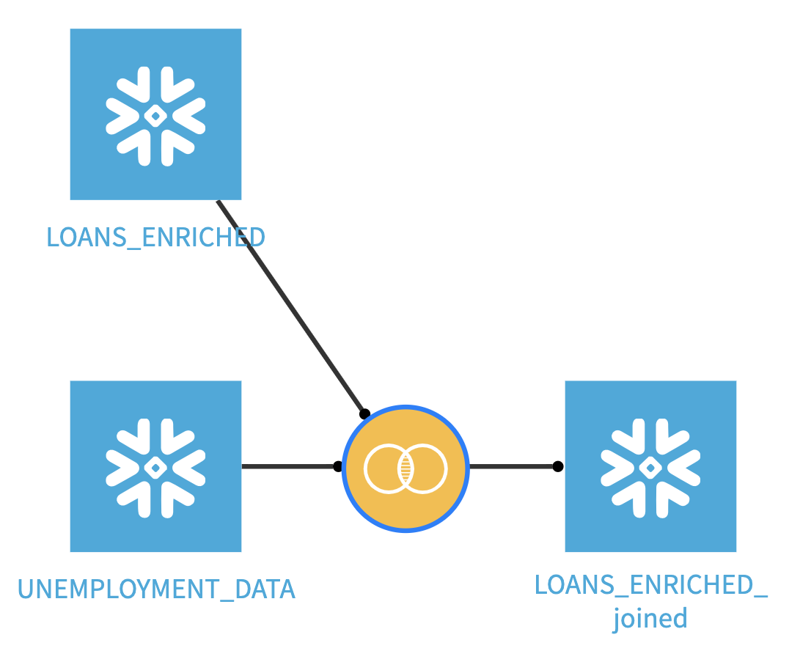
Data cleaning and preparation is typically one of the most time-consuming tasks for anyone working with data. In our lab, in order to save some of that time, our main lending dataset already had a number of cleaning steps applied. In the real world this would be done by other colleagues, say, from the data analytics team collaborating on this project and you would see their work as steps in our projects flow.
Let's take a brief look at the Prepare recipe, the workhorse of the visual recipes in Dataiku, and perform some final investigations and transformations.
- From the flow
Single clickon the LOANS_ENRICHED_joined dataset that was the output of our Join recipe andselect Preparefrom the visual recipes in theActions Panel. - Leave the
NameandStore intooptions as the defaults and clickCREATE RECIPE

In a Prepare recipe you assemble a series of steps to transform your data from a library of ~100 processors. There are a couple of ways you can select these processors to build your script. Firstly you can select these processors directly by using the +ADD A NEW STEP button on the left. Secondly because Dataiku DSS infers meanings for each column, it suggests relevant actions in many cases. In the example below although the column is stored in Snowflake as a String Dataiku DSS recognizes it as a date format so infers a Date(unparsed) meaning and suggests the Parse Date processor, by selecting the More actions menu item further suggestions are made.

Let's try using processors with both methods, firstly via the suggested actions:
- Click on the
EARLIEST_CR_LINEcolumn header and from the dropdown,select Parse date - In
Add a custom formatset the format tod-MMM-yyyyand click onUSE DATE FORMAT - A step is generated on the left. Change the
Localetoen_US


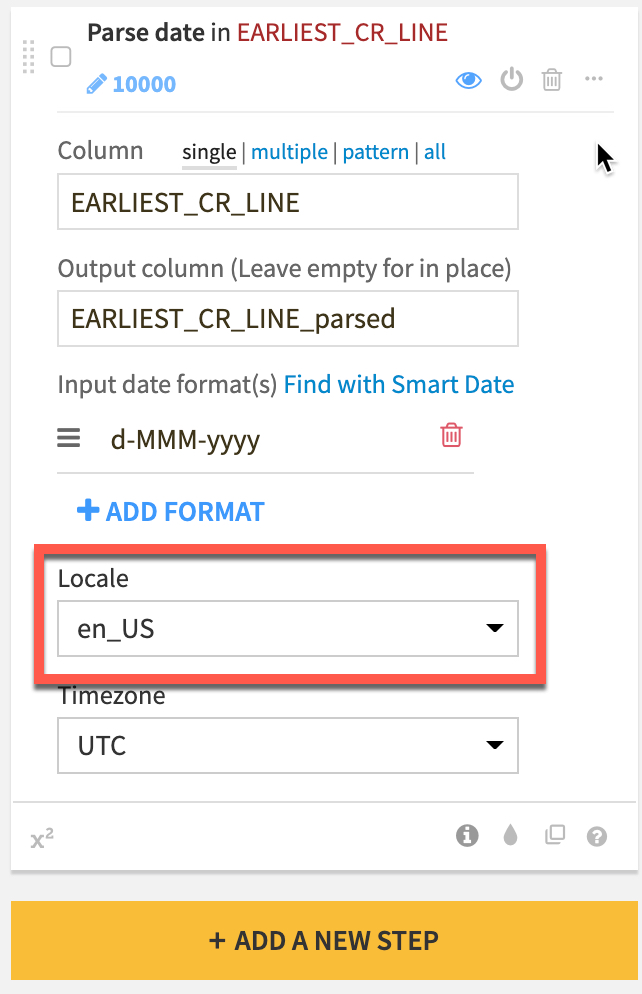
- Click on the newly created column (click outside the step to action the change) and select
Compute time since - Change
UntiltoAnother Date Columnand add ISSUE_DATE_PARSED as that column. - Change the unit to
Yearsand name the new columnsince_Earliest_CR_LINE_years

Now we have our desired feature we can remove the two date columns.
- Click on
EARLIEST_CR_LINEand selectdelete, do the same forEARLIEST_CR_LINE_parsedandISSUE_DATE_PARSED.

Your script steps should now look like this:

Optionally you can place the three date transformation script steps into their own group with comments to make it simple for a colleague to follow everything you have done. Let's turn our attention to the INT_RATE column. The interest rate is likely to be a powerful predictive feature when modeling credit defaults but currently its stored as a string:
- Click on the
+ADD A NEW STEPbutton at the bottom of your script steps. - Select the
Find and Replaceprocessor either by looking in theStringsmenu or using the search function.

- Select
INT_RATEas the column then click+ADD REPLACEMENTandreplace % with a blank value. Ensure theMatching Modedropdown is set toSubstring
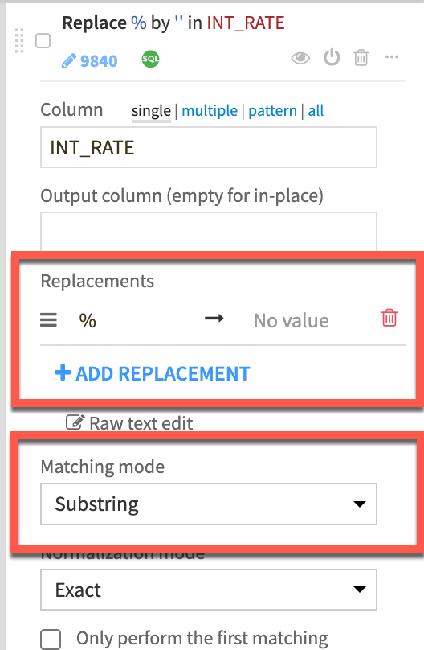
Our INT_RATE column has some suspiciously high values. Let's use the Analyze tool again and see how it can be used to take certain actions in a Prepare recipe
- Click on the
INT_RATEcolumn header dropdown, selectAnalyze. - In the Outliers section, choose
Remove rows outside 1.5 IQRfrom the menu then close theAnalyzewindow.

Finally lets take a look at our DTI column which is a ratio of the borrower's total monthly debt payments on the total debt obligations divided by the borrower's self-reported monthly income.
- Click on the
DTIcolumn header and selectAnalyze

We can see that there are a very small number of missing rows. We're going to perform some calculations using this column in our next lab section so lets fix that now.
- Select the
topactions menu and selectRemove rows where DTI is empty - Close your
Analyzewindow
Your final series of steps should look like this
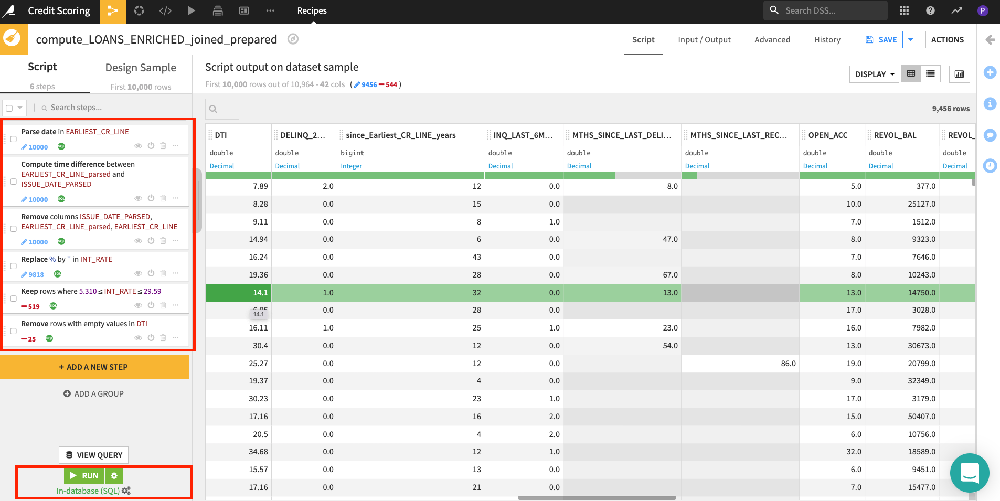
As before you can optionally group and comment your transformation steps.
SAVEyour recipe, ensureIn-database (SQL)engine is selected and then clickRUN
Dataiku DSS integrates with Snowpark for Python allowing coders to take advantage all the benefits of Snowflake whilst collaborating alongside their no/low-code colleagues on projects to accelerate time to value in DSS, their end-to-end, governed AI lifecycle platform.
When using Dataiku's SaaS option from Partner Connect the setup is done for us automatically. Let's check that.
Return to your browser tab with Dataiku Launchpad open (if you have shut this just go to Launchpad.
Select the Features menu 
Your Snowpark extension is now ready to use. 
A Note on Code Environments: Dataiku uses the concept of code environments to address the problem of managing dependencies and versions when writing code in R and Python. Code environments provide a number of benefits such as Isolation and Reproducibility of results
When using Snowpark for Python from Dataiku DSS you will use a code environment that includes the Snowpark library as well as other packages you wish to use. In our lab, to make things easy, we are using a default Snowpark code environment which just contains just the minimum required libraries but once you have completed the lab and wish to explore further you can create your own code environments.
In addition to selecting an appropriate code environment there are just a couple of extra lines of code to add to your DSS recipe to start using Snowpark for Python.
Lets take a look at a simple example.
Firstly you need to add the following line to your imports:
from dataiku.snowpark import DkuSnowpark
Then read the inputs, instantiate Snowpark, get the dataframe, write your code then write your output.
# Read recipe inputs
input_dataset = dataiku.Dataset("my_input_dataset")
# get input dataset as snowpark dataframe
dku_snowpark = DkuSnowpark()
snowdf = dku_snowpark.get_dataframe(input_dataset)
# ALL YOUR CODE HERE
# get output dataset
OUTPUT_DATASET = dataiku.Dataset("my_output_dataset")
# write input dataframe to output dataset
dku_snowpark.write_with_schema(OUTPUT_DATASET,snowdf)
We have an example Jupyter notebook to help you get started. Download the notebook from the S3 bucket to a local drive then we will upload to DSS (Note: You would typically use the Git integrations in DSS for managing team notebooks developed outside of DSS).
Either select notebooks from the menu or use the G+N keyboard shortcut. Select to upload your notebook, choose the file and click upload.


Here is the notebook we imported, click create recipe

select Python recipe and click ok

For the input dataset we will select LOANS_ENRICHED_joined_prepared and for the output dataset type LOANS_FE and then click Create recipe

You now have the notebook set up with correct input and output datasets in our flow. You can either use the default code editor or jupyter notebook. We will work on jupyter notebook. Click edit in notebook

Ensure your Jupyter notebook is using the snowpark kernel, if not change it from the Change Kernel menu

Test running your cells (note the code assumes the dataset names specified above. If you have changed any input or output dataset names be sure and make those updates in the code).
Feel free to add you own code and experiment, when you are done click SAVE BACK TO RECIPE.
From the default Code Editor lets check apply the correct code environment. Click on Advanced and then select a Snowpark code environment from the dropdown (Note: Your available code environments may differ from the screenshot)

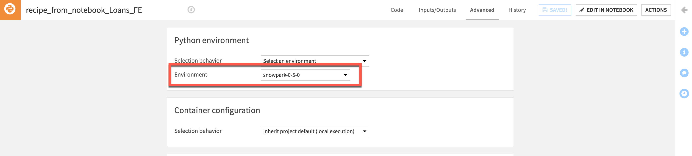
Return to the Code screen and click the Run button to execute the recipe using Snowpark and to generate the output dataset in the flow.
Having sufficiently explored and prepared the loans and employment data, the next stage of the AI lifecycle is to experiment with machine learning models.
This experimentation stage encompasses two key phases: model building and model assessment.
Model building: Users have full control over the choice and design of a model — its features, algorithms, hyperparameters and more.
Model assessment: Tools such as visualizations and statistical summaries allow users to compare model performance.
These two phases work in tandem to realize the idea of Responsible AI. Either through a visual interface or code, building models with DSS can be transparently done in an automated fashion. At the same time, the model assessment tools provide a window into ensuring the model is not a black box.
Before building our model first we will split our output dataset from our python step.
This is how your flow should look like before splitting 
- Return to the flow and select the output dataset
LOANS_FEof the python recipe and then select theSplitrecipe from theActionsmenu. - Add two datasets named
LOANS_TRAINandLOANS_TEST(leaveStore intoas the default for both) and clickCREATE RECIPE

- Choose
Dispatch percentiles of sorted dataas the splitting strategy
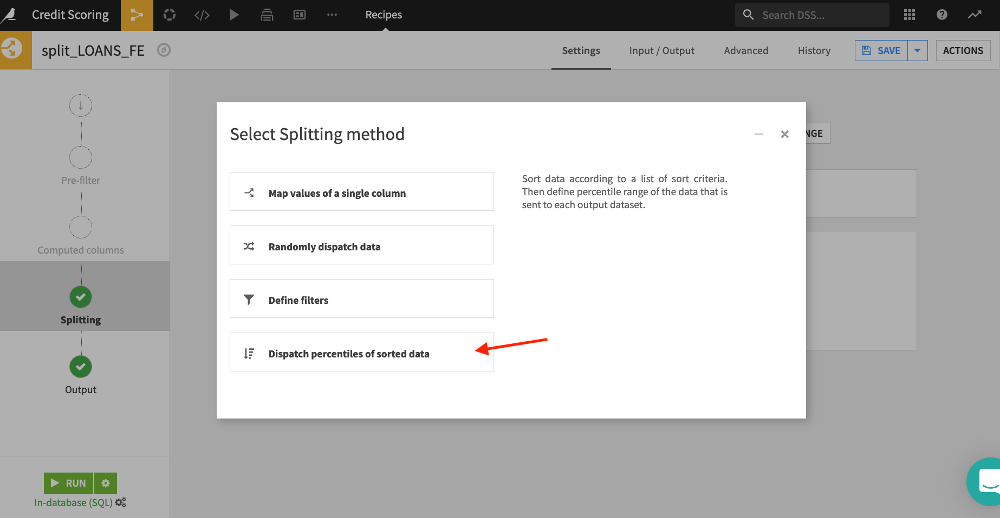
LOAN_IDas the column to split on,70 & 30split for Train and Test data.Click run

- Return to the flow and select the
LOANS_TRAINdataset and click theLABbutton in the Actions menu - Select
AutoML Prediction(aka supervised machine learning) and setLOAN_STATUSas the target and leave the default template ofQuick Prototypesthen clickCREATE


When building a visual model, users can choose a template instructing DSS to prioritize considerations like speed, performance, and interpretability. Having decided on the basic type of machine learning task, you retain full freedom to adjust the default settings chosen by DSS before training any models. These options include the metric for which to optimize, what features to include, and what algorithms should be tested etc.
Lets take a look at the settings from the template.
- Click on
DESIGNat the top of the page.
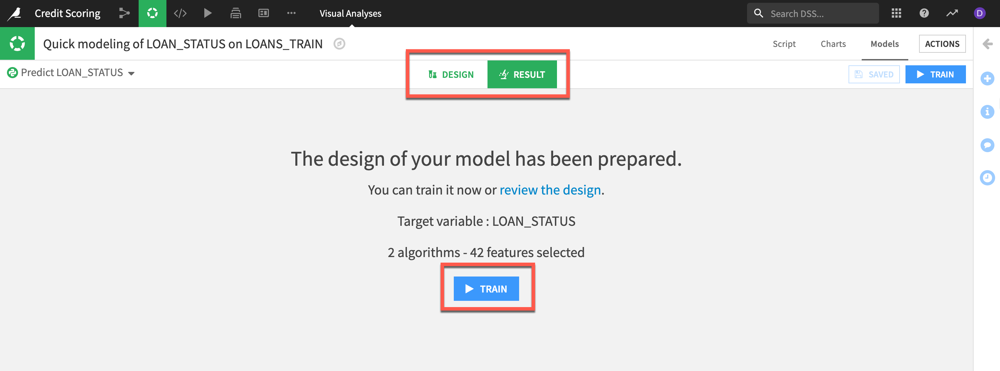
On the left side we can view/adjust the various settings for our current experiment. We don't have time in todays lab to cover all the options but here is a brief outline of a few we will use in the lab:
TRAIN/TEST SET - When training a model, it is important to test the performance of the model on a "test set". During the training phase, DSS "holds out" on the test set, and the model is only trained on the train set. In this section you can adjust the strategy.
DEBUGGING - ML Diagnostics are designed to identify and help troubleshoot potential problems and suggest possible improvements at different stages of training and building machine learning models.
FEATURES HANDLING - We can allow Dataiku DSS to automatically choose the features included in our model, or we can manually select which features we want to include when our model is trained and how we handle the feature types.
ALGORITHMS - DSS natively supports algorithms that can be used to train predictive models depending on the machine learning task: Clustering or Prediction (Classification or Regression). We can also choose to use our own machine learning algorithm, by adding a custom Python model. In our case we are using the algorithms based on the Scikit-Learn, LightGBM and XGBoost ML libraries.
Let's use the defaults the template has set.
- Click on the
TRAINbutton to start the experiment.
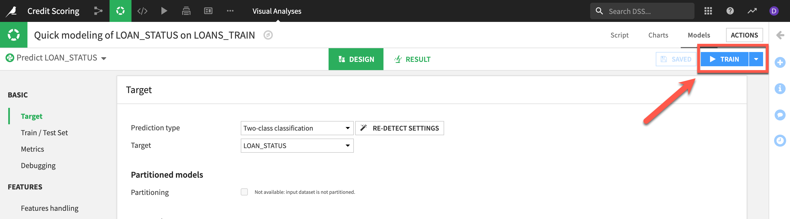

The RESULTS pane in DSS provides a single interface to compare performance in terms of sessions or models, making it easy to find the best performing model for the chosen metric.
In the RESULTS screen we can see the output of our first experiment. DSS displays a graph of the evolution of the best cross-validation scores found so far. Hovering over one of the points, we can see the evolution of the hyperparameter values that yielded an improvement. In the right part of the charts, we can see final test scores.
We can also see that some Diagnostics checks have been flagged.
Hover overtheDiagnosticsto see what the guardrails have found.
Imp Note : Your results may vary from the screen shots below.

Here we can see there a number of potential issues DSS has identified for us. It seems we have an imbalanced dataset which is leading to the model almost always predicting class 1 (that there will be no default on the loan).
We can see this in our distribution.
- Go back to the
DESIGNmenu and chooseFeatures handlingand our target variableLOAN_STATUS

Here we can see that our loan defaults only make 4% of the dataset. So even if our model erroneously predicted that no loan would ever default it would still be correct 96% of the time for this imbalanced dataset! This is a common issue in certain types of classification problems such as credit card fraud, identifying rare diseases or, as in our case, loan defaults.
Although this a common problem in machine learning it is not one that is always easy to solve. Fortunately DSS has a number of ways to help such as weighting strategies, class rebalance sampling, Algorithm selection and more. Let's look at a couple of these techniques.
Firstly we can a look at class rebalance.
- Go to the
Train/Test Setand from theSampling methoddropdown selectClass rebalance (approx. ratio) - Set the percentage to 20% and the Column as our target LOAN_STATUS

Lets also change the algorithms we are using as logistic regression and tree-based algos tend not to perform as well with imbalanced datasets. Let's look at some of our boosting algos.
- Go to
Algorithmsand deselectLogistic RegressionandRandom Forestand then selectXGBoostandLightGBM(Note: you can select many more algo's but be aware it may take longer depending on your runtime setup)

Saveyour settings and then clickTRAIN
As you can see on our results page we saw an improvement in our score and addressed our imbalance issue. The diagnostics warn us the test set might be too small now but we have a much larger dataset available to us from the LendingClub if we want to use it.
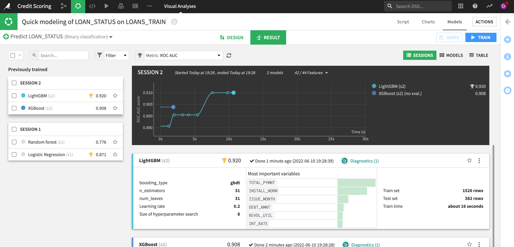
After having trained as many models as desired, DSS offers tools for full training management to track and compare model performance across different algorithms. DSS also makes it easy to update models as new data becomes available and to monitor performance across sessions over time.
- We can directly compare models from different experiments by selecting them via the
checkboxand then selectingComparefrom theACTIONSmenu.

- Make sure
Create a new comparisonand then clickcompare
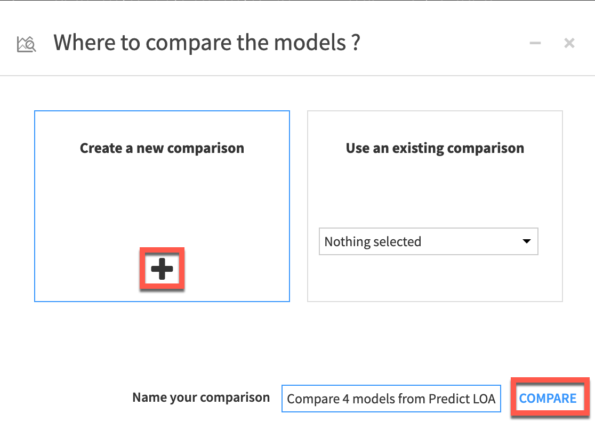
We can compare across our experiments, saved models and evaluations from a DSS evaluation store (not part of this lab). You can set a champion and compare to challengers.
- Explore some of the options. When you are done
clickon themodel nameof your best performing model from theSummarymenu.

Clicking on any model produces a full report of tables and visualizations of performance against a range of different possible metrics.
- Step through the various graphs and interactive charts to better understand your model.
- For example
Subpopulations Analysisallows you to identify potential bias in your model by seeing how it performs across different sub-groups Interactive Scoringallows you to run real time"what-if" analysisto understand the impact of given features

Here we can see Variable importance

After experimenting with a range of models built on historic training data, the next stage is to deploy our chosen model to score new, unseen records.
For many AI applications, batch scoring, where new data is collected over some period of time before being passed to the model, is the most effective scoring pattern. Deploying a model creates a "saved" model in the Flow, together with its lineage. A saved model is the output of a Training recipe which takes as input the original training data used while designing the model.
- Click on
DEPLOY, accept the default model name and clickCREATE

Your flow should now look like this:

- From your
Flowselect thenewly deployed model(Green diamond) and theScorerecipe from theactions menu

- Select your
LOANS_TESTfrom theInput dataset dropdown. Leave theNameandStore intofor the output as the defaults and clickCREATE RECIPE

- Ensure
In-Database (Snowflake native)is selected as the engine in order to use the Java UDF capability then click `RUN'

Your final project flow should now look like this.

We can now We can see the results back on the Snowflake tab. If you hit the refresh icon near the top left of our screen by your databases, you should see the CREDIT_SCORING_LOANS_TEST_SCORED table that was created once we kicked off our prediction job.
Preview Data will give you glimpse of additional column added to the list.
USE ROLE SYSADMIN;
USE DATABASE PC_DATAIKU_DB;
USE WAREHOUSE PC_DATAIKU_WH;
SELECT *
FROM LOANS_TEST_SCORED_CREDITSCORING_1
LIMIT 10;

Additional info
SELECT
EMP_TITLE ,
SUM(CASE WHEN "prediction" = 'ok' THEN 1 ELSE 0 END) AS prediction_yes,
SUM(CASE WHEN "prediction" = 'incident' THEN 1 ELSE 0 END) AS prediction_no
FROM LOANS_TEST_SCORED_CREDITSCORING_1
GROUP BY
EMP_TITLE
order by prediction_yes DESC;
Congratulations you have now successfully built, deployed and scored your model results back to Snowflake. Your final flow should look like this.
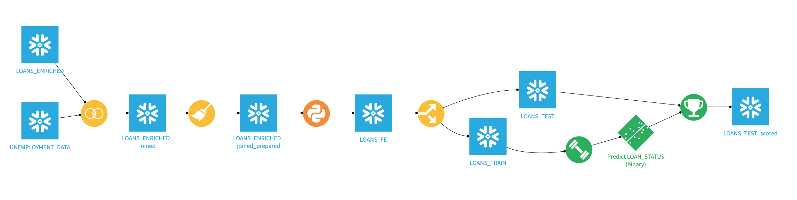
What we have covered
- Worked in Explored Snowflake interface
- Investigated Snowflake Marketplace
- Explored and transformed the data in Dataiku using visual tools understanding how to leverage Snowflake for both storage and compute
- Transformed the data using Python code (optionally using Snowpark)
- Built and refined an ML model
- Scored back results using Java UDF to Snowflake for further analysis
Related Resources
To enable the anaconda libraries on snowflake account
1.Create a new trial account on https://signup.snowflake.com
2.Login
3.Switch to ORGADMIN role
4.Go into Admin » Billing
5.Click on Terms & Billing, and enable Anaconda terms.